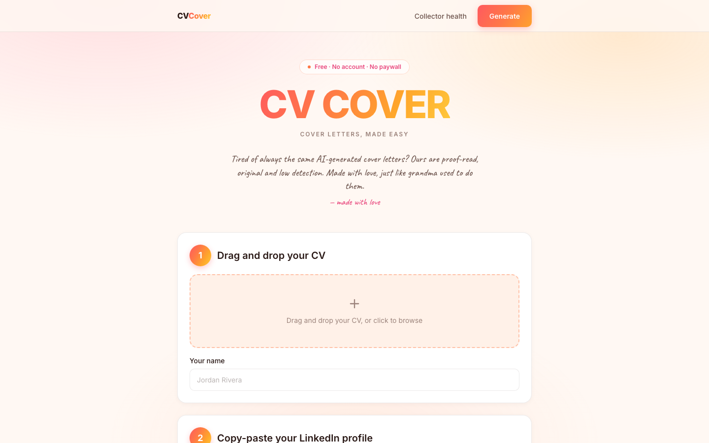
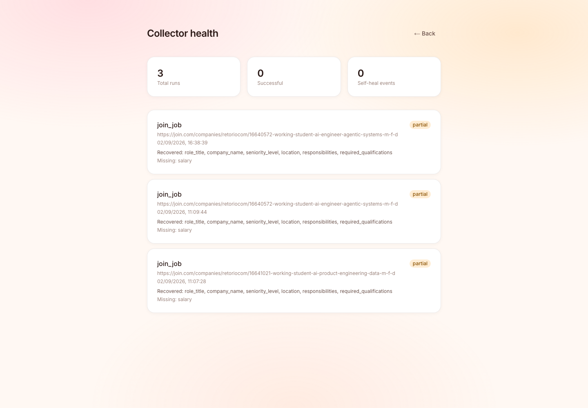

So people paste the ad into ChatGPT. That produces a letter that reads like ChatGPT wrote it: the same three-paragraph shape, the same "I am writing to express my enthusiasm", and an increasingly detectable statistical fingerprint that applicant tracking systems now screen for.
Every posting wants a letter that cites that posting. The work scales linearly with applications.
A chatbot only sees what you pasted. Miss a detail from the ad, and the letter is filler.
ATS-side AI detection turns the shortcut into a liability, not just a weak letter.
Each letter is drafted from the actual scraped job ad and your real resume, in the posting's own language, and downloads as a formal PDF laid out to the German DIN 5008 letter standard.
The prompt must cite a named responsibility from the posting and a real project or role from the CV. No filler claims.
No em dashes, no "thrilled to apply", no rule-of-three adjective stacks, deliberately varied sentence length.
A German posting produces a German Anschreiben even from an English CV. That is the right behaviour, not a bug.
Drag in a CV, paste the job links, hit generate. There is no onboarding, no signup wall and no pricing page in the way. The entire product is one page and a results modal.

Field by field, per run, in production. Note the status on these runs: partial — not a green checkmark. The postings listed no salary, so the run says so.
// real, unedited production record { "collector_name": "linkedin_job", "status": "partial", "fields_recovered": ["role_title", "company_name", "seniority_level", "location", "responsibilities"], "fields_missing": ["salary"], "self_heal_events": [] }

The Scraper Studio collector was built against Greenhouse. Pointed at Lever and Ashby — unfamiliar layouts — it did not return empty fields.
It returned the training company's name, every time, with the record otherwise perfectly well-formed. The app happily generated letters addressed to the wrong employer.
Self-healing does not catch this, because from the collector's point of view nothing is broken. It found a company name.
# collectors/router.py if not posting.role_title: raise BrightDataError( "Could not read this job posting.")
Treat a missing role title as proof the scrape did not land. Refuse rather than guess.
The router picks a path per URL. Everything downstream is path-agnostic, so adding a board is additive, never a rewrite.
| URL | Path | Why this path |
|---|---|---|
linkedin.com |
Prebuilt LinkedIn Jobs dataset | LinkedIn is aggressively hostile to generic scraping and requires a session for most postings. The prebuilt dataset returns a fixed schema synchronously and sidesteps that entirely. |
join.com |
schema.org JobPosting collector |
join.com renders client-side, so a generic collector reads nothing. Every posting ships a structured JSON-LD block — exact, and stable across layout changes. |
| everything else | Bright Data Scraper Studio collector | Fields are defined in plain language, not CSS selectors, so the collector can be repaired in place when a site's layout shifts. |
Next.js 16, Tailwind v4, client-side PDF + ZIP
FastAPI, httpx, pydantic, concurrent scrapes
Bright Data Scraper Studio + prebuilt datasets
Vercel + Railway, live in production today
Scraping is not a one-time build. It is a maintenance liability, and the architecture is designed around that fact.
Extraction is driven by what a field means ("the job title for this posting"), not by a selector. A renamed CSS class does not silently produce empty strings.
bdata scraper heal repairs the collector against the live page when extraction genuinely regresses — no hand-written selectors to rewrite.
The one that matters. Validate that what came back is actually about the page you asked for — and refuse when it is not.
success every expected field came back
partial the scrape landed, some fields were absent from the page
failed nothing usable came back
Unsupported boards are rejected with a clear message rather than silently mis-scraped. Company context is optional and off by default, because it is unreliable on JS-heavy marketing sites. When it returns noise, the letter is written from the posting and CV alone rather than absorbing nonsense.
Sized from applicant behaviour rather than from a top-down "HR tech is $30B" number, so every input below can be argued with individually.
~400M white-collar job seekers globally × ~$6/yr blended willingness-to-pay for application tooling.
~26M active seekers in EU + UK + North America who apply through the supported boards, at ~$12/yr realised.
1.5% of SAM. ~32k paying users at $144/yr (see pricing), reached via the free tier already live.
DIN 5008 is a real barrier. German applications have a formal layout standard. Generic tools output an American business letter, which reads as wrong to a German recruiter.
Language matching is non-trivial. A German posting needs a German Anschreiben with the right conventions, not a translation. Already shipped.
join.com is a DACH board. Supporting it is a deliberate wedge into a market the US-built incumbents ignore.
One letter = one scrape + one LLM draft. Both are metered, both are small, and the PDF is rendered client-side at zero marginal cost.
| Cost component | Per letter |
|---|---|
| Bright Data scrape 1 collector run or dataset call | $0.0060 |
| LLM draft ~4k in / ~700 out, JSON mode | $0.0100 |
| CV parse + PDF render server CPU + client-side jsPDF | $0.0004 |
| Marginal COGS | $0.0164 |
| Unit model — Pro tier | Value |
|---|---|
| Price | $12 / mo |
| Letters included | 40 / mo |
| Assumed real usage | 14 / mo |
| COGS at that usage | $0.23 |
| Payment + infra overhead | $0.72 |
| Gross margin | 92% |
content + board SEO
job search is seasonal
$55 LTV
The product is free and account-less today. That is the top of the funnel, not the business model — and it is why the free tier keeps a real, unlimited-feeling allowance.
3 letters / month. No account. Full DIN 5008 PDF, no watermark, no degraded output.
Purpose: prove the letter quality is different before asking for anything.
40 letters, ZIP batching, saved CV profiles, letter history.
The trigger is volume: the day someone applies to eight roles at once, the ZIP is worth $12.
Per seat, university and bootcamp career offices. Cohort dashboards, institutional letterhead.
Solves the churn problem: the institution renews annually even as students cycle through.
The differentiator is not letter quality in the abstract. It is that the letter is written from a verified, structured posting instead of from whatever the user managed to paste.
| Approach | Gets the posting how | Fails how | Where Coverit differs |
|---|---|---|---|
| ChatGPT / Claude direct | User copy-pastes | Silently incomplete input | We scrape the full posting as structured fields, so nothing depends on what the user remembered to paste. |
| Cover-letter SaaS Teal, Kickresume, et al. |
Paste, or a thin URL fetch | Generic US business-letter output | DIN 5008 layout and true language matching — a German posting yields a German Anschreiben. |
| LinkedIn Easy Apply | Native, no letter | No differentiation at all | We compete on the letter being specific, which is the only part a recruiter reads twice. |
| Build-it-yourself | Own scraper | Confidently wrong data | The failure mode on slide 06 is invisible until it has already cost someone an application. We built the guard. |
Three collection paths converging on one schema. Adding a board is additive.
Per-field run records in production. We know when we are wrong, and we say so.
DIN 5008 and language matching are shipped, not roadmap.
Everything below is live in production today. There is no paid tier and no user base yet — that is the honest position, and the next section is what changes it.
The engineering risk is retired: it works, it is deployed, and the hard failure mode is understood and guarded. What is unproven is willingness to pay. That is what this round buys an answer to.
Board coverage 3 → 15, persistent storage, accounts and billing.
Content and board SEO against the CAC assumption on slide 10.
Bright Data and LLM spend at 10× current volume.
Runway buffer past the 18-month mark.
| Milestone | Target | What it proves |
|---|---|---|
| Month 3 | Accounts, billing, 15 job boards | The acquisition layer generalises beyond the three boards it was built against. |
| Month 6 | 1,000 paying users | The $12 price point clears against a genuinely useful free tier. |
| Month 12 | First 10 careers-services contracts | The institutional channel solves structural churn. |
| Month 18 | $45k MRR, LTV/CAC ≥ 3 | The unit model on slide 10 survives contact with real users. |
Coverit is a validated job-posting acquisition layer with a cover-letter product on top. The letter is what users buy. The acquisition layer is what competitors cannot copy from a screenshot.
coveritt.vercel.app
/health
github.com/karankartikeya/cvsmart